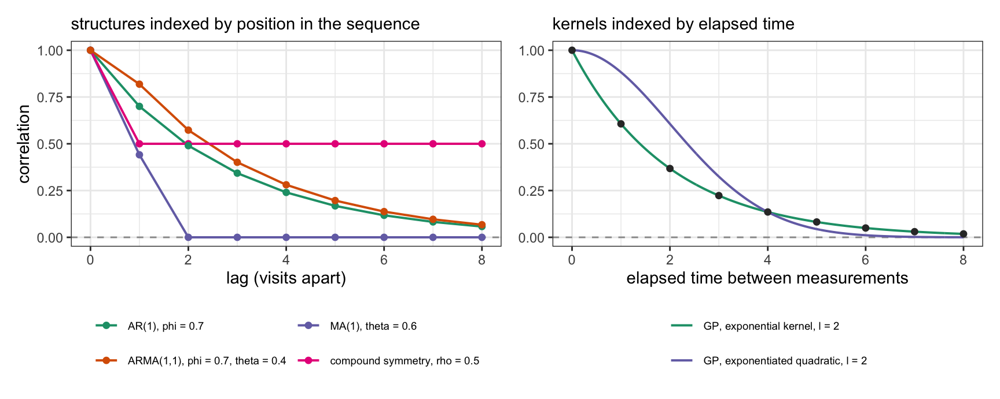

Appendix E — Correlation structures for repeated measures
The multilevel models of Chapter 28 treated the group as a clinic and the patients inside it as unordered. Repeated measurements on one patient are a grouping structure like any other – (1 | id) gives each patient an intercept, (time | id) gives each patient a trajectory – but the group now has an internal order, and that order carries information the clinic models discard. Two readings taken a week apart are usually more alike than two taken three years apart.
This appendix collects the structures that can express that, and what each of them assumes. All of them state the correlation between two measurements on the same patient as a function of how far apart they are; Figure E.1 draws those functions, and Table E.1 is the summary.
E.1 What a random intercept assumes about time
sbp ~ drug * time + (1 | id) gives patient \(i\) one offset \(\alpha_i \sim \text{Normal}(0, \sigma_\alpha)\), shared by all of that patient’s measurements. Write \(y_{it}\) for the measurement made on patient \(i\) at time \(t\), and let \(s\) be the time of any other measurement on the same patient, so that \(y_{it}\) and \(y_{is}\) are two arbitrary readings from one patient’s series. The implied correlation between them is
\[\text{cor}(y_{it}, y_{is}) = \frac{\sigma_\alpha^2}{\sigma_\alpha^2 + \sigma_y^2}\]
the intraclass correlation, and what matters is what the right-hand side does not contain: neither \(t\) nor \(s\) appears in it, nor does the gap \(|t - s|\) between them. Every pair of measurements is equally correlated whatever the interval. This is compound symmetry, or exchangeability within the patient. It is the same assumption the models of Chapter 28 made about patients within a clinic, where it is reasonable because patients in a clinic have no natural order. For a series in time it is usually wrong.
A random slope, (time | id), relaxes it, though not in the direction one might expect. Patient \(i\) now has an intercept deviation \(\alpha_i\) and a slope deviation \(\tau_i\), jointly normal as in the varying-slope model of Chapter 28, and for two measurement times \(t\) and \(s\),
\[\text{cov}(y_{it}, y_{is}) = \sigma_\alpha^2 + \rho\,\sigma_\alpha \sigma_\tau (t + s) + \sigma_\tau^2\,ts\]
with the residual variance \(\sigma_y^2\) added when \(s = t\), which is then the variance of a single measurement and grows quadratically in \(t\). Both times enter separately, rather than only through their difference, and both are measured from wherever the origin of the time axis has been put – that origin is part of the model here, because \(\alpha_i\) is the patient’s level at \(t = 0\) (a modelling choice about the axis, not the time zero of Chapter 14). This describes patients on different trajectories. It does not describe short-range dependence: a bad week followed by a bad week, on a patient whose long-run trend is flat.
E.2 AR, MA and ARMA: structure in the residuals
The other route leaves the mean structure alone and models the correlation of the residuals.
AR(1), first-order autoregression, makes each residual a fraction of the previous one plus fresh noise:
\[\varepsilon_t = \phi\,\varepsilon_{t-1} + w_t, \qquad w_t \sim \text{Normal}(0, \sigma_w)\]
With \(|\phi| < 1\) the series is stationary with variance \(\sigma_w^2 / (1 - \phi^2)\), and the correlation between residuals \(k\) steps apart is \(\phi^k\) – geometric decay that approaches zero without reaching it. AR(\(p\)) extends the recursion to the \(p\) previous residuals.
MA(q), moving average, builds the residual from the current shock and the last \(q\) shocks:
\[\varepsilon_t = w_t + \theta_1 w_{t-1} + \cdots + \theta_q w_{t-q}\]
Its correlation is zero beyond lag \(q\). The two are different claims about persistence: AR says an unusually high reading raises all later readings with diminishing weight and no cut-off, MA says it raises the next \(q\) and then leaves no trace.
ARMA(p,q) has both parts. For ARMA(1,1) the autocorrelation is
\[\rho_1 = \frac{(1 + \phi\theta)(\phi + \theta)}{1 + 2\phi\theta + \theta^2}, \qquad \rho_k = \phi\,\rho_{k-1} \quad (k \ge 2)\]
so the MA part sets the height of the first step and the AR part governs the decay from there. That is what ARMA is for: a series whose lag-1 correlation does not lie on the geometric curve implied by the rest of them.
With four to eight visits per patient, \(\phi\) is estimable and \(\theta\) usually is not. AR(1) is the term worth trying; ARMA belongs to long series – daily measurements, monitoring data, aggregate counts over many periods – where there are enough lags to identify both parts.
A random effect and an AR term answer different questions and combine:
brm(bf(sbp ~ drug * visit + (1 | id) + ar(time = visit, gr = id, p = 1)),
data = long)The random intercept carries the patient’s level, which persists undiminished; the AR term carries the dependence around that level, which decays.
brms also has cosy(), which states compound symmetry directly as a correlation rather than as a variance ratio, and unstr(), which estimates every pairwise correlation separately. In brms 2.23 the cosy parameter is constrained to \([0, 1]\), so it is a reparametrisation of what (1 | id) implies rather than a generalisation of it; unstr() assumes nothing about the shape of the decay and costs \(T(T-1)/2\) correlations, which is affordable when there are few visits and everybody is measured at the same ones. That is the structure behind the mixed model for repeated measures used in trials, where it is the recommended default for moderate to large samples measured at a small number of common time points.1
Two implementation points. First, ar(), ma() and arma() default to cov = FALSE, a regression formulation that is fast and allows orders above 1 but is available only for gaussian models and some of their generalisations. cov = TRUE builds the residual covariance matrix instead, extends to other families by adding latent residuals, and is restricted to order 1. Second, and more consequential: the correlation is built from an observation’s position within its group, not from the value of the time variable. The time argument fixes the ordering. Visits at 0, 1, 2 and 12 months are treated as four equally spaced steps, and \(\phi\) is the correlation between neighbouring visits whatever the gap.
E.3 Gaussian processes: correlation as a function of elapsed time
gp() removes that restriction. It places a prior over a function of a continuous input:
\[\bigl(f(t_1), \ldots, f(t_n)\bigr) \sim \text{MVNormal}(\mathbf{0}, \mathbf{K}), \qquad K_{ab} = \sigma_{\text{gp}}^2\,k\bigl(|t_a - t_b|\bigr)\]
Two parameters carry the behaviour and both are estimated: sdgp (\(\sigma_{\text{gp}}\)), the amplitude of the function, and lscale (\(\ell\)), the length-scale, the distance over which the function stays correlated with itself. The kernel \(k\) sets the shape. brms supplies the exponentiated quadratic \(\exp(-d^2 / 2\ell^2)\) (the default, and very smooth), the Matérn 3/2 and 5/2 (rougher), and the exponential \(\exp(-d/\ell)\). A general treatment of Gaussian processes is beyond this book; ?gp and the brms vignettes cover the kernels and their tuning, and what matters here is their relation to the structures above.
The exponential kernel is the continuous-time AR(1). On a grid with spacing \(\Delta\) it gives neighbouring correlation \(\exp(-\Delta/\ell)\), which is AR(1) with \(\phi = \exp(-\Delta/\ell)\); the points in the right panel of Figure E.1 lie on that curve. The difference appears off the grid, where the GP is defined for any pair of times and the AR term is not.
Is a Gaussian process a multilevel structure? In the sense used in Chapter 28, yes. (1 | clinic) places a prior over one deviation per clinic, whose spread \(\sigma_\alpha\) is estimated from the data; gp(time) places a prior over the values of a function whose amplitude \(\sigma_{\text{gp}}\) and length-scale \(\ell\) are estimated from the data. Both are adaptive priors, and both shrink – the first pulls small clinics toward the population mean, the second pulls the fitted function toward flatness where the data are sparse. The difference is the index. A random intercept treats the groups as exchangeable, so clinic C07 is no more similar to C08 than to C43; a GP treats the index as ordered and metric, so neighbouring values are similar by construction and \(\ell\) states how similar.
One thing it is not, in brms: a hierarchical structure over patients. Writing gp(time, by = id) fits a separate Gaussian process for each patient, each with its own sdgp and lscale, and pools nothing across them – the no-pooling model at the level of functions. The specification that combines the two is a population-level process with ordinary random effects for the patient:
brm(sbp ~ drug + gp(time) + (1 | id), data = long)a common trajectory in time whose shape is estimated, plus a per-patient offset that is partially pooled in the usual way.
E.4 When a Gaussian process is the better choice
Measurement times are irregular. This is the clearest case. In routine-care and registry data patients are measured when they attend, so the gaps differ between patients and within a patient. An AR term reads that as a uniform grid; a GP uses the elapsed time. If the intervals vary by an order of magnitude, the difference is not a refinement.
The shape of the trajectory is unknown. A polynomial in time is a strong claim about shape, and a treatment-by-visit interaction with eight visits estimates eight effects with no borrowing between neighbouring ones. gp(time) estimates the shape and lets the length-scale decide how much structure the data support. Splines do the same job – s() is available in brms, and Appendix F treats them; the callout below compares the two.
Prediction between and beyond the observed times. A GP is a function, so its posterior is defined at times nobody was measured, with intervals that widen away from the data. An AR term describes residuals and provides no such object.
Series too sparse for per-patient curves. With three or four scattered measurements each, no patient supports an individual smooth, but a population-level GP with a random intercept per patient does.
Against those:
Few fixed visits. Where everyone is measured at 0, 3, 6 and 12 months, unstr() estimates the six correlations directly and assumes nothing about their shape. A GP is the more restrictive model there, not the less restrictive one, because it forces the correlation to fall monotonically with the gap.
Computation. An exact GP needs a Cholesky decomposition of the covariance matrix at every step of the sampler, which is cubic in the number of distinct input values. gr = TRUE (the default) collapses observations sharing an input value, and k switches to a Hilbert-space basis-function approximation with k functions, which is what makes GP terms usable on more than a few hundred distinct times.2
The estimand. If the correlation structure is a nuisance and the target is a treatment contrast at prespecified times, a GP adds hyperparameters and sampling time without changing the estimand. Use the cheapest structure that is not badly wrong, and check that the answer does not depend on which one you chose.
Absorption of the effect. A flexible smooth in time will absorb any exposure effect that is itself smooth in time. Where treatment is rolled out gradually, gp(time) can remove the variation the effect is identified from. The same caution applies to any flexible adjustment for calendar time.
gp() or s()?
Both place an adaptive prior over a function and estimate from the data how much structure to allow, and the two families overlap: a smoothing spline can be written as the posterior mean of a Gaussian process under a particular kernel. For a single smooth of one variable with moderate data they usually fit almost identically. The choice is decided by the parameters, the cost, and the bases available.
What gp() gives. Smoothness stated in the units of the input. lscale is a distance, so a prior on it is a substantive claim – that the function does not change appreciably in under three months, say. A spline’s hyperparameter sds is the standard deviation of the penalised basis coefficients: it does control wiggliness, but its value depends on the basis and the penalty and has no reading in months. Two qualifications. scale = TRUE is the default and rescales the predictors so that the largest distance between two points is 1, so lscale is on that scale unless scale = FALSE; and brms sets a data-dependent inverse-gamma prior on lscale that keeps it away from both zero and the range of the data, which is why GP terms usually sample without hand-tuning. The kernel is the second thing gp() gives: it states how rough the underlying process is, from the exponentiated quadratic (very smooth) through the Matérn kernels to the exponential, which is the continuous-time AR(1) above. When what is wanted is a correlation structure in time rather than a mean curve, that correspondence makes the Gaussian process the natural object.
What s() gives. Cost, and a wider range of bases. An exact Gaussian process is cubic in the number of distinct input values; a spline is linear in the sample size for a fixed basis dimension, and gp(time, k = 20) only narrows that gap. The bases cover structures a stationary kernel does not: bs = "cc" for a function that must join up at the ends of a cycle, and bs = "fs" for a smooth per subject (Appendix F). The last of these matters for repeated measures. gp(time, by = id) estimates a separate amplitude and length-scale for every subject and pools nothing across them, so its parameter count grows with the number of subjects. s(time, id, bs = "fs") gives each subject a curve while keeping a small number of smoothing parameters for the whole set – three, in the default setup, whether there are five subjects or twenty – so the individual curves are partially pooled toward a common degree of smoothness. That is the multilevel treatment of trajectories, and the GP terms in brms do not offer it.
| Structure | brms term | Correlation of two measurements | Use when |
|---|---|---|---|
| Random intercept | `(1 | id)` | constant, $\sigma_\alpha^2/(\sigma_\alpha^2+\sigma_y^2)$ | few measurements, no serial structure, patient estimates wanted |
| Random slope | `(time | id)` | depends on both times; variance grows with time | patients follow different trajectories |
| Compound symmetry | `cosy(time, gr = id)` | constant, estimated directly, non-negative | as the random intercept, if per-patient estimates are not needed |
| Unstructured | `unstr(time, gr = id)` | one parameter per pair, no shape assumed | few visit times, common to all patients |
| AR(1) | `ar(time, gr = id)` | $\phi^k$, $k$ = visits apart | regularly spaced series, dependence decaying with lag |
| ARMA(p,q) | `arma(time, gr = id, p, q)` | first lags set by the MA part, decay by the AR part | long series with enough lags to identify both parts |
| Gaussian process | `gp(time)` | $k(|t_a - t_b|)$, declining in elapsed time | irregular times, unknown trajectory shape, prediction between times |
None of these choices bears on identification. They decide how the model states the dependence among a patient’s readings, and so the width of the intervals and the shape of any fitted trajectory; the within-patient contrast that a patient-level intercept identifies, and the cluster-level confounding it may leave in, are as in Chapter 28 with the patient in the clinic’s place. The causal question a repeated exposure raises – treatment at one visit changing the confounders of the next – is the subject of Chapter 15.
Lu K, Mehrotra DV, “Specification of covariance structure in longitudinal data analysis for randomized clinical trials,” Stat Med 2010;29:474-488 (DOI).↩︎
Riutort-Mayol G, Bürkner PC, Andersen MR, Solin A, Vehtari A, “Practical Hilbert space approximate Bayesian Gaussian processes for probabilistic programming,” Stat Comput 2023;33:17 (DOI).↩︎